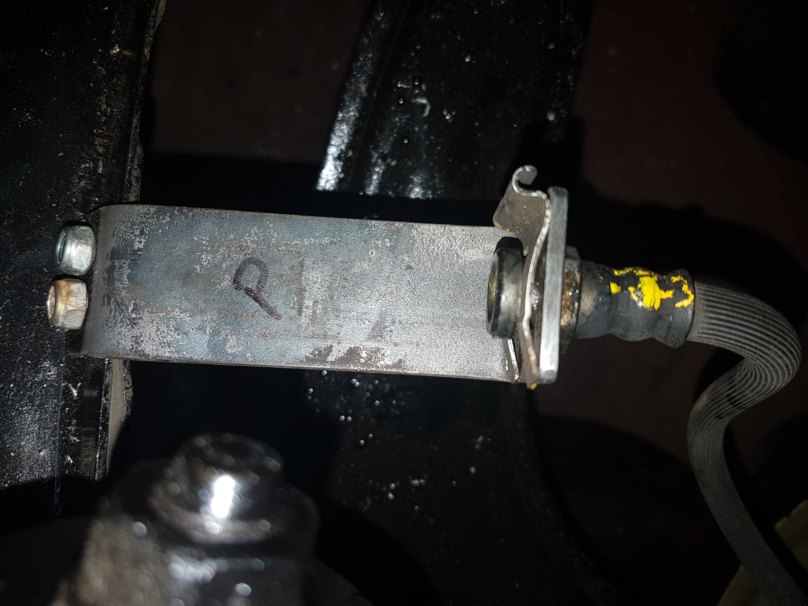
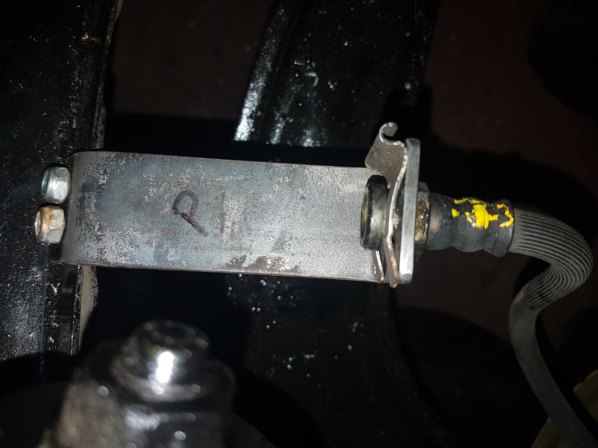

Firstly 2 brackets are required to join the flex hose to solid brake pipe
- Using 3x30mm mild steel cut a piece 130mm long (30+85+15).
- Mark 30mm from one end (pipe connector)
- Mark 15mm from the other (mounting)
- Drill a 17mm hole in the center of the 30mm section
- Bend the 30mm section to 90degrees
- Hold the bracket up against the front sub frame (refer to pictures) in position
- Drill 2 6mm holes through the chassis avoiding the spot welds, maintaining enough spacing to fit bolts
- Mark the bracket for these holes and drill
- Bend this 15mm in the oppostite direction to the 30mm section to 45degrees.
- Paint
- Mount on to the subframe
- Repeat for second side
 
